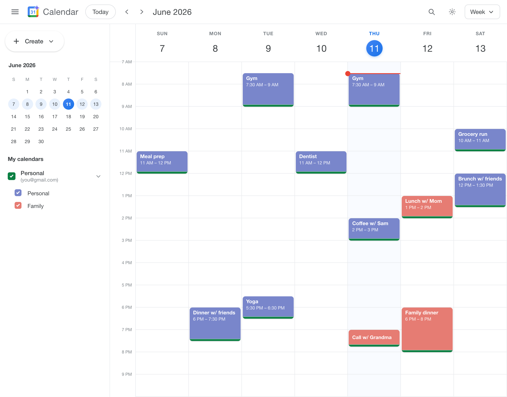
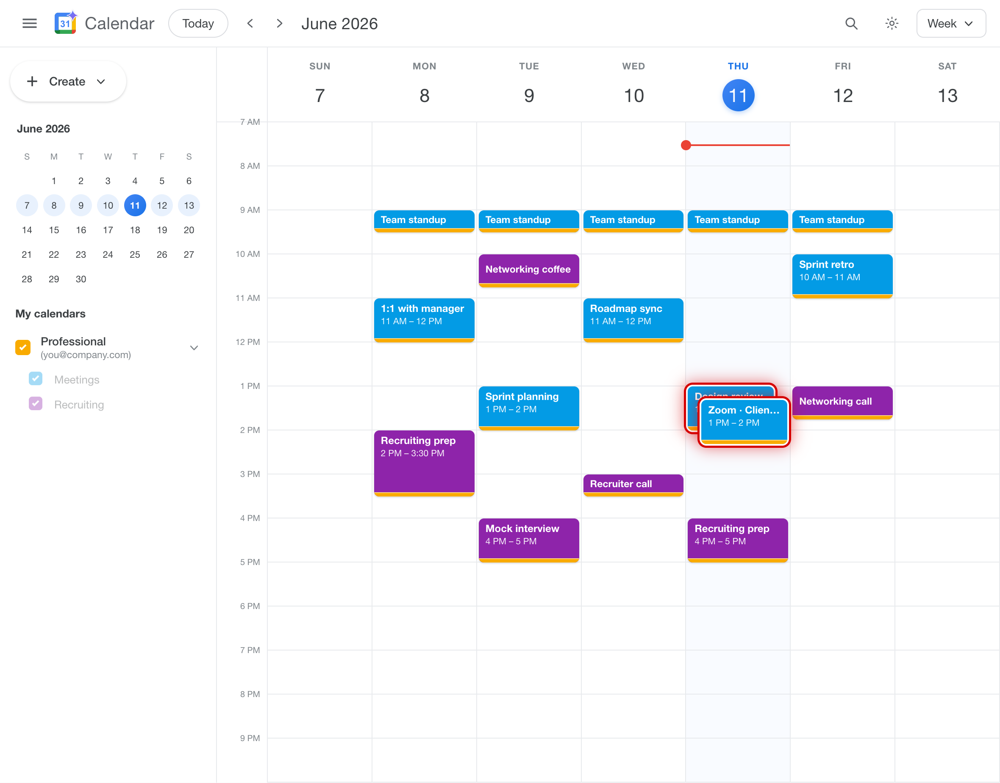

Google · AgendaAI
June 2026
Problem
- Planning your day shouldn't be a chore. Figuring out what fits where eats up the time you were trying to make room for in the first place.
- It's easy to double-book yourself. When your life is split across this many calendars, two things land on the same hour before you ever see them collide.
- Your free time is fragmented. 30 minutes here, an hour there, never quite enough in one place. So you cram the thing that mattered into a too-short gap, or you skip it.
Personal

Professional

Proposed Solution — AgendaAI
- It knows your entire schedule. Connect each Google account once and AgendaAI reads them all in parallel — School, Personal, Professional.
- It finds time — and makes more. Ask in plain language: "When can I study?" It scans every calendar for the real openings, and when they're too fragmented to use, proposes small adjustments.
- It catches what you'd miss. AgendaAI knows when you're free and when you're not and it will flag conflicts before you agree to them.